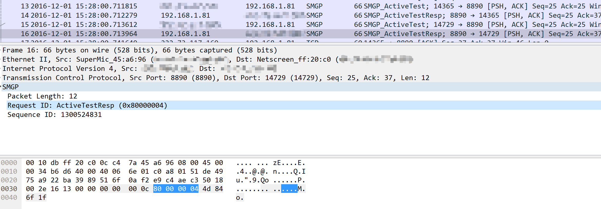

优化wireshark下Lua插件SMGP3.0协议代码
@(Linux)[学习]
[toc]
写在前面
由于wireshark对SMGP协议不支持，之前使用wireshark查看SMGP协议字段，一般都是拷贝下来HEX，一个字节一个字节对。眼睛都要花了！
昨天检查问题的时候同事和我说wireshark可以支持Lua插件自己编写协议识别代码，然后给了我一个SMGP.Lua文件。我安装了一下，发现是可以识别，但是如果一个包里有多个协议包的时候只识别一个，于是决定优化一下
前期准备
Lua方面
首先，我对Lua语言之前没有接触过，不过语言大都差不多。而且我的修改比较简单，应该就是加一个控制循环语句和判断。先去看了一下Lua一些基本语法.lua的循环和shell差不多
sireshark方面
根据官方给的实例，搞懂基本流程
https://www.wireshark.org/docs/wsdg_html_chunked/lua_module_Pinfo.html#lua_class_Column
https://www.wireshark.org/docs/wsdg_html_chunked/PartDevelopment.html
要改哪里就去搜索开发文档
主要修改地方
找到主函数
在主函数下添加根据字长是否还有剩余，进行判断，如果还有数据，则接着执行
修改上面后还要修改返回值，之前函数是返回布尔型的，让他返回有效长度，修改SMGP_dissector函数
初步完工
修改上面之后，基本上可以识别了多个协议包了
但是我发现submit包里面本来是有一个8字节的保留字段的，这个字段主要是用于长短信设置udhi字段的。而这个代码里面没有，所以可以添加。
先在前面一大段定义后面添加一个定义然后在p_SMGP.fields字段后面添加添加的f_RecvTime
如果要完善，
f_ReserveValue字段应该是定义函数的这里偷了个懒，以后可能添加
然后在local function SMGP_Submit(buf,pkt,t)函数下面添加
最后一点
在高亮部分的info里面显示里面的包的协议类型
这个我找了一上午，主要是要找怎样添加字段，而之前的用set()函数是重置
一般是用append()函数，但是，这个是添加到字段尾部，我想添加到头部google了很久，英文的又看不懂。。。最后还是在官方api里找到了，用preend()函数我也可以说我是看英文官方文档的人了
再各个协议包字段函数里面添加对应的显示字段
顺便添加了一下Active_Test和Active_TestResp的显示
到这里，基本上已经改好了，可以适用于大多数的SMGP协议包了。之后有可能进行修改吧。
安装
既然这么好，那么，哪里可以用上呢？
先升级wireshark，我也忘了哪个版本支持Lua了，看帮助吧，里面有。
然后在安装目录里面的init.lua文件最后添加一行
然后
将后面的代码复制，粘贴到一个新文件SMGP.lua,放到init.lua同级目录就可以用了

修改后代码
|
|